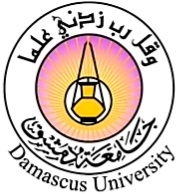

جامعة دمشق
كلية الطب البشري

أداة تصنيف Bone‑RADS
Bone-RADS Classification Tool
الكثافة Density
شفافة Lucent
مصلبة Sclerotic
مختلطة Mixed
الحواف Margins
واضحة Well-defined
غير واضحة Ill-defined
نمط الارتكاس السمحاقي Periosteal Reaction
لا يوجد None
غير عدواني Non-aggressive
عدواني Aggressive
عمق التآكل Endosteal Erosion
خفيف Mild
متوسط Moderate
عميق Deep
الكسر المرضي Pathologic Fracture
لا No
نعم Yes
كتلة الأنسجة الرخوة Soft Tissue Mass
لا No
نعم Yes
الامتداد الطولي Longitudinal Extent
صغير Small
متوسط Moderate
كبير Large
الامتداد العرضي Transverse Extent
صغير Small
متوسط Moderate
كبير Large
احسب التصنيف Calculate
إعادة التقييم Reset
جدول مختصر لتصنيفات Bone‑RADS
التصنيف
الوصف المختصر
BRADS‑1
آفة سليمة نموذجية – لا تحتاج متابعة
BRADS‑2
آفة محتملة السليم – متابعة خلال 6 أشهر
BRADS‑3
آفة غير نموذجية – تحتاج MRI أو متابعة قصيرة
BRADS‑4
آفة مشتبهة بالخباثة – تحتاج خزعة أو إحالة